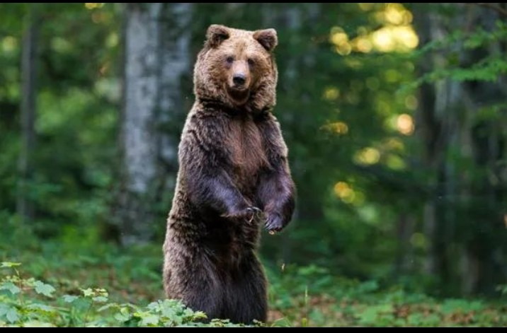
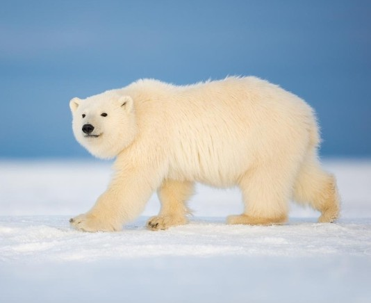

Bear
Bears are powerful mammals found in several parts of the world. They are recognised by their strong bodies, thick fur, large paws, and excellent sense of smell.
Different bears species live in different environments, including forests, mountains, and Arctic regions.
Although bears are often portrayed as fierce animals, their behaviour and diets vary considerably between species.
Physical Characteristics:
Bears generally have large bodies, strong limbs, thick fur, and powerful claws.
Their fur colour varies by species.
Some bears have black or brown fur, while polar bears have white-looking fur that helps them blend into snowy surroundings.
Habitat:
Different bear species inhabit different environments.
Examples include:
Diet:
Many bears are omnivores, meaning they eat both plant and animal matter.
Depending on the species, their food may include:
Polar bears, in contrast, depend primarily on animal prey, especially seals.
Behaviour:
Many bear species spend much of their lives alone, except during mating, when mothers raise their cubs, or when food sources attract several bears.
Some bears enter a period of reduced ctivity during winter.
The timing and nature of this behaviour depend on the species and environmental conditions.
Amazing Bear Facts:
Are Bears Endangered?
The conversation status of bears varies by species.
Some populations face serious threats from habitat loss, climate change, illegal hunting, and conflits with humans.
Protecting habitats and reducing harmful human-wildlife interactions can help bears survive.
Why Should We Protect Bears?
Bears contribute to healthy ecosystems.
Depending on the species, they may disperse seeds, influence prey poplations, and help move nutrients through their environments.
Bears are remarkable animals whose survival depends on suitable habitats, healthy ecosystems, and responsible conversation efforts.